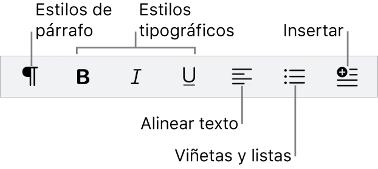

Text formatat
<b> i <strong>:Negreta
-<b> aplica negreta sense indicar cap importancia semantica.
-<strong> aplica negreta i indica que el text es important.
<i> i <em>:Cursiva
-<i> aplica cursiva sense impicar importancia.
-<em> aplica cursiva i indica sera importancia.
<u>:subratllat
-S'empra per subratllar el text.
<Strike> o <s>:Text ratllat
-Aplica un ratllat al text,indicant que esta esborrat o ja no és rellevant.
<sup>:Superindex
-S'empra per elevar un text,exemple
<sub>:Subindex
S'empra per posar un text en posicio de subindex,exemple
